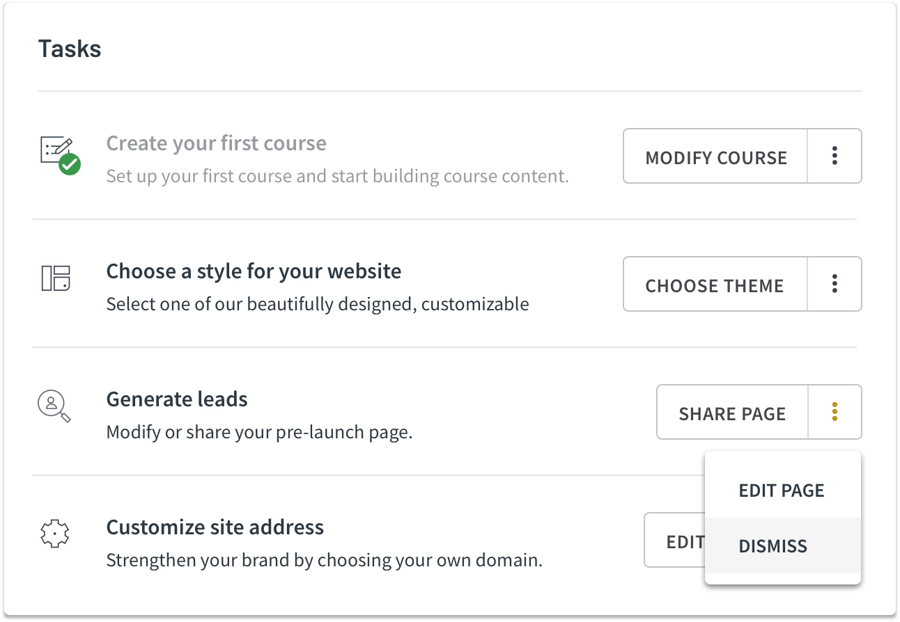

I worked on a tool that improves the exploration and purchasing of huge amounts of satellite imagery by allowing users to search and see image results on a map.

Helping customers find and purchase 510.1 million km² worth of earth imagery.
Satellites are photographing every inch of land on earth, every single day. It’s UP42’s mission to open up access to this data and to help people unlock critical information to better understand the planet.
UP42 is a developer platform and marketplace offering a wide range of geospatial data and analytics. A core aspect of the platform is enabling customers to construct workflows that take satellite imagery, apply processing algorithms and extract insights from that data. However, the only way to see available imagery is by executing a ‘test run’ of your workflow and repeating until you find something appropriate. There’s no guarantee the ‘test run’ will return what you’re looking for.
Catalog search was created to solve this exact problem. It is a tool that improves the exploration of huge amounts of satellite imagery by allowing users to search and see image results on a map. The MVP of this feature was released to test the market and understand how it could evolve to better help customers. This is where my role on the new “Data Platform” team began.
Enable an error free and intuitive ordering experience.
Research from watching many users sign up for the platform and take their first steps showed that they didn’t know the most important things they should be doing. A sense of delight and guidance to meaningful accomplishments was missing. I realized this was crucial in maintaining customers and increasing their chance of success with the platform.
A key part of onboarding was to effectively communicate the main function of the platform. In this case there were two — creating a course and designing a website. Based on some user tests, we decided to create an interactive onboarding modal upon entering the platform that would incorporate these key functions and get the user to make some basic decisions.
Provide sense of achievement and encourage next steps.
User research and tests showed us that people wanted guidance upon entering the platform. Tasks were introduced to provide a sense of accomplishment and guide the user to important next steps.
After a couple of months watching users interact with the new onboarding flow, a second iteration was designed. Based on further research and user tests, improvements were made to the user flow and a “choose your own path” style of onboarding was implemented.